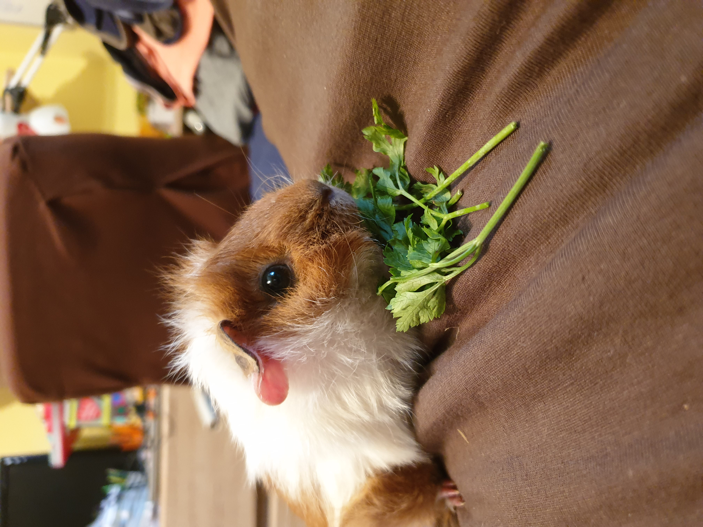
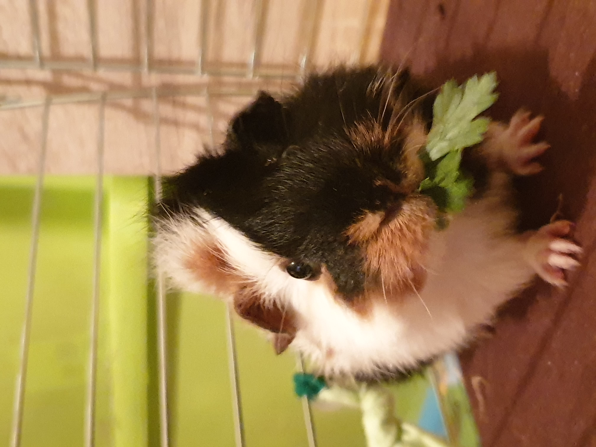
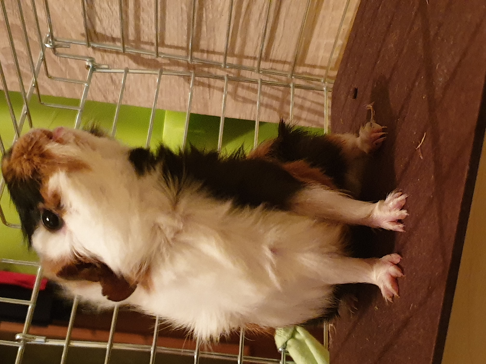
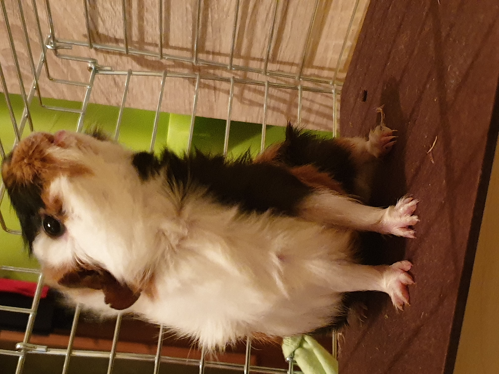

Pokarm dla świnek:
1. Sianko – podstawa diety w dużych ilościach – świnki wręcz je uwielbiają
2. Ziółka – mogą być świeże lub zimą suszone, np.. babka lancetowata, mięta, melisa, rumianek, krwawnik, pokrzywa, dziurawiec, tymianek, kolendra
3. Jabłka
4. Pomidory bez pestek
5. Papryka świeża
6. Ogórek świeży
7. Pietruszka natka, najlepiej świeża lub suszona jako smakołyk w niewielkich ilościach.
8. A także gotowe mieszanki dla świnek w postaci granulatów zawierające wszystkie niezbędne składniki pokarmowe.
9. Dużo świeżej wody
Należy pamiętać aby świeże warzywa były osuszone z wody.


Czym nie karmimy świnek
Świnkom morskim nie powinno się podawać karmy przeznaczonej
dla królików domowych,
gdyż zawiera za dużo białka a łupiny zbóż zalegają świnkom między zębami.
Nie podajemy produktów pochodzących od zwierząt oraz nabiału.
Nie podajemy także fasoli i grochu.
Zabronione są winogrona, ziemniaki, cebula, soki owocowe, grzyby, słodycze i spleśniałe
warzywa czy owoce.
Liście kapusty i sałaty mogą być ciężkostrawne dla naszych mały gryzoni 😊.
 
